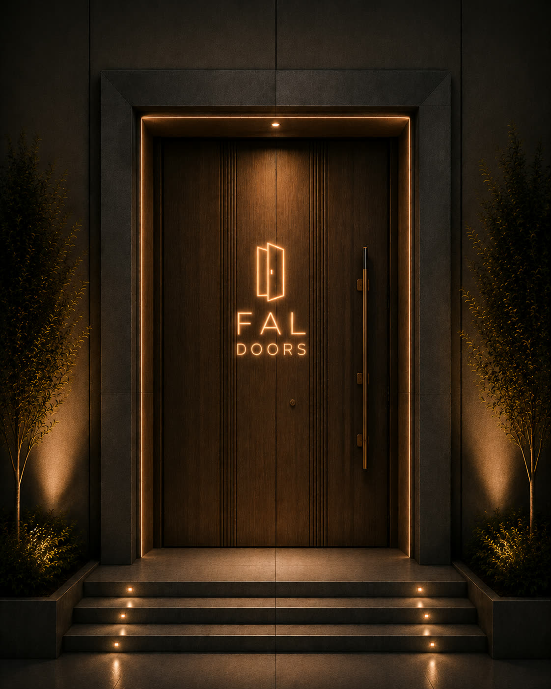
FAL / Signature Entrance
Hyrja si identitet.
Designed in Albania
Rreth FAL DOORS
01Dizajn me qëllim
02Prodhim me kontroll
03Montim me precizion
FAL Doors
“Fal Doors është një kompani e specializuar në prodhimin dhe shitjen e dyerve me një fokus të qartë në cilësinë, dizajnin dhe shërbimin ndaj klientëve. Çfarë na dallon është pasioni ynë për inovacionin dhe përdorimin e teknologjisë së fundit në prodhimin e dyerve.
Ne ofrojmë një gamë të gjerë të dyerve të personalizuara për shtëpinë tuaj ose projektin tuaj të ndërtimit, duke përdorur materialet më të mira dhe metodat më të avancuara.
Ekipi ynë i përkushtuar punon vazhdimisht për të siguruar që secili produkt të jetë i përshtatur me kujdes për të përmbushur nevojat dhe pritjet e klientëve tanë. Ne kemi ndërtuar marrëdhënien me klientin mbi besimin dhe përkushtimin ndaj shërbimit të shkëlqyeshëm.”
Innovation • Quality • Reliability
ARREDOFAB
Group
Building solutions, creating futures
Nga pajisjet industriale, te prodhimi i dyerve dhe ekonomia qarkulluese—grupi bashkon ekspertizë, infrastrukturë dhe vizion për të krijuar zgjidhje që zgjasin.
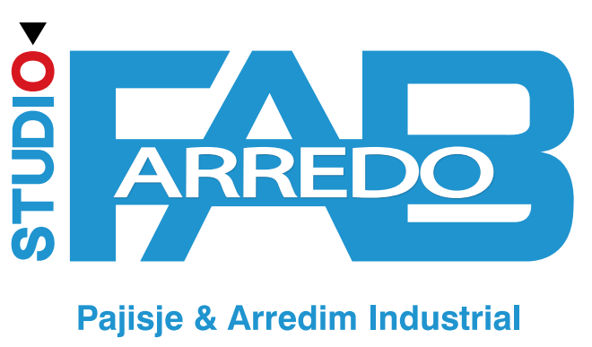
Studio Arredo FAB
Pajisje, arredim industrial dhe zgjidhje teknike për ambiente profesionale.
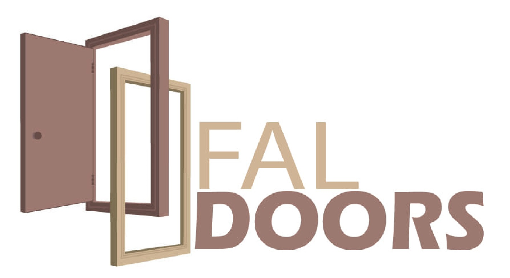
FAL DOORS
Dyer me porosi ku arkitektura, siguria dhe mjeshtëria takohen ne një hyrje të vetme.
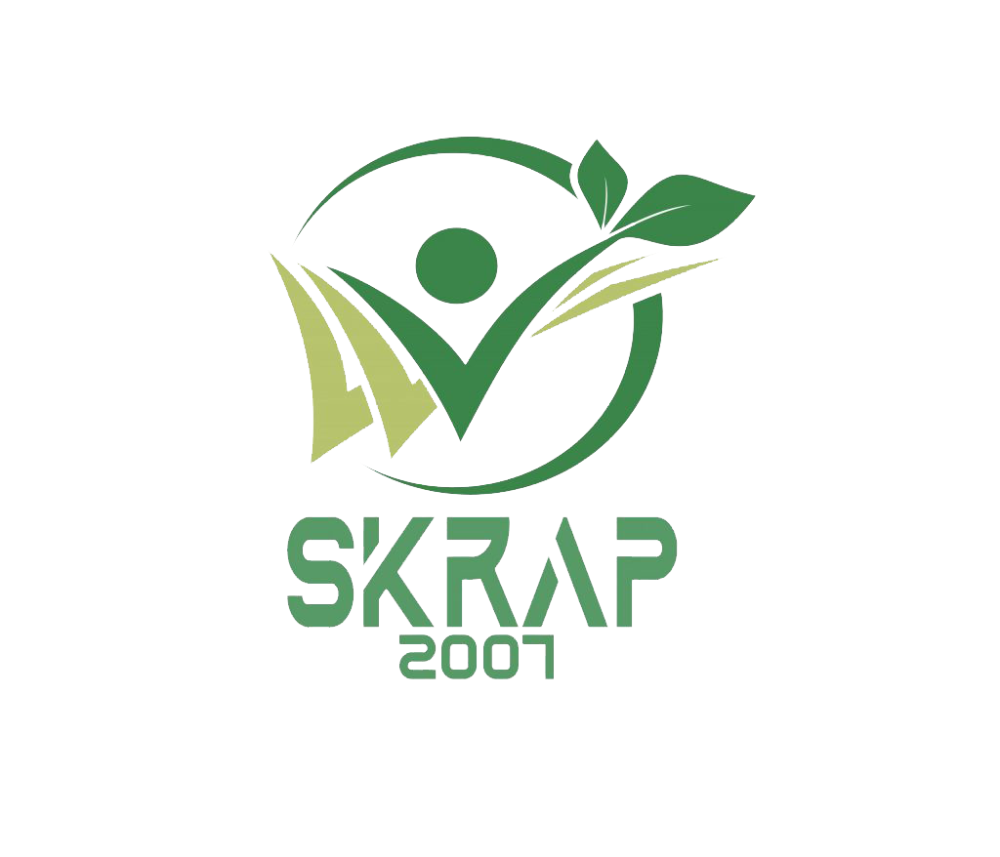
SKRAP 2007
Menaxhim materialesh dhe rikthim në vlerë me një qasje me te pergjegjshme ndaj burimeve.
Partnerët tanë
Një rrjet që lëviz me të njëjtin standard.
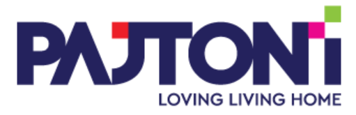
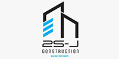
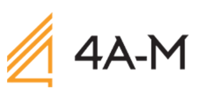
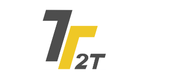
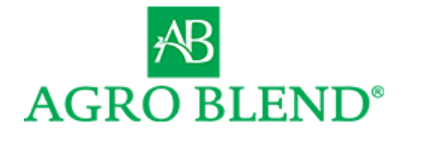
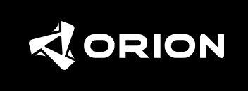
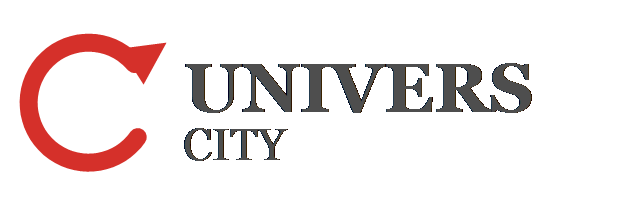
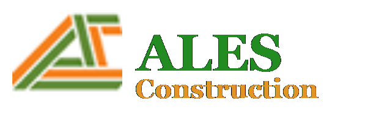
Matje të sakta
Çdo projekt fillon me dimensione të qarta dhe kuptim të hapësirës.
Materiale të zgjedhura
Finitura druri, profile moderne dhe detaje që rezistojnë në përdorim.
Punë me porosi
Zgjidhje për banesa, vila, zyra dhe ambiente komerciale.
Procesi FAL / 01—04
Një vijë e qartë.
Një vijë e qartë.
Nga ideja të hyrja.
Projekti, materiali, prodhimi dhe montimi trajtohen si një proces i vetëm. Kështu ruajmë kontrollin mbi çdo detaj.
Lexojmë ambientin
Matje & konsultim
Dimensione, funksion, stil dhe kërkesat e përdorimit.
Formojmë idenë
Projektim
Modeli, finitura, doreza, profili dhe detajet e sigurisë.
E bëjmë reale
Prodhim
Punë e kontrolluar në punishte dhe përfundim i pastër.
E vendosim saktë
Montim & suport
Dorëzim, rregullim dhe kujdes pas instalimit.
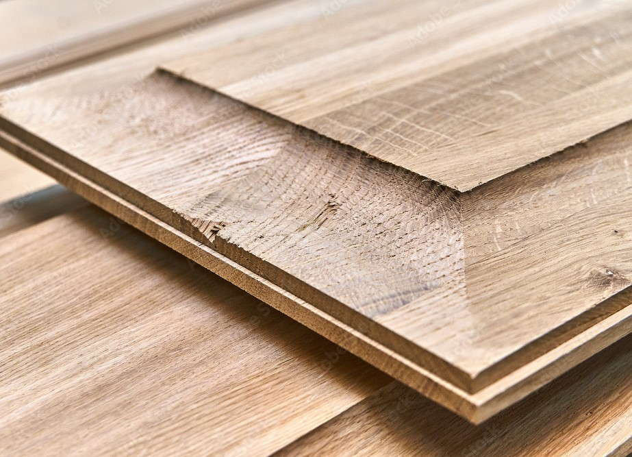
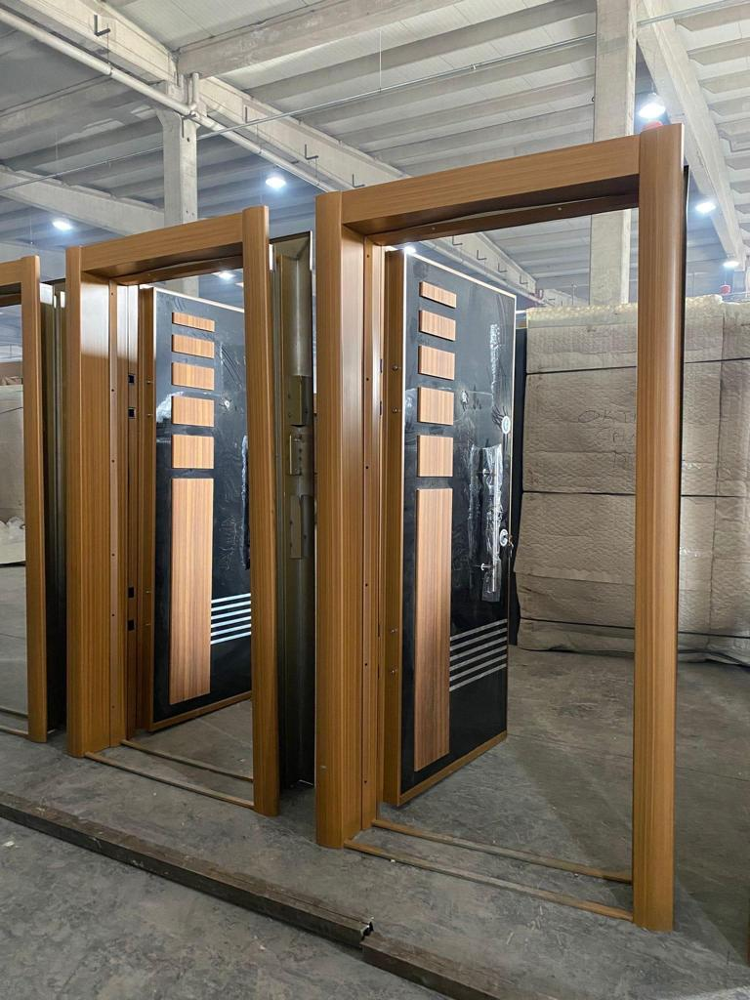
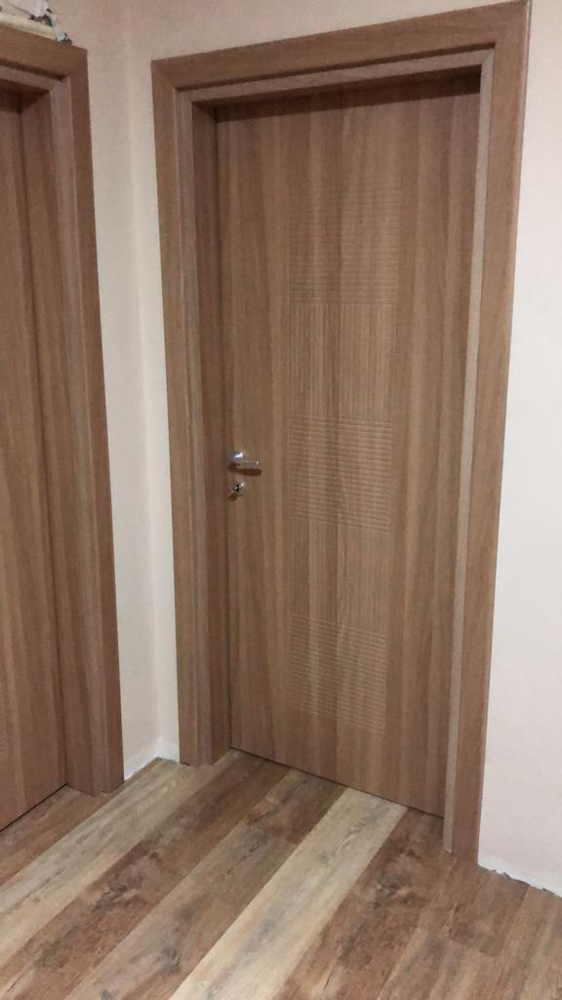
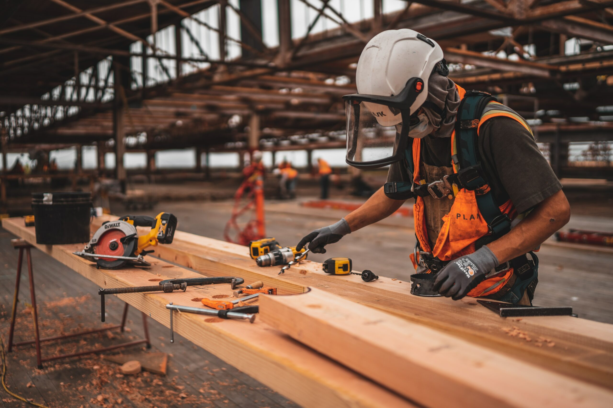